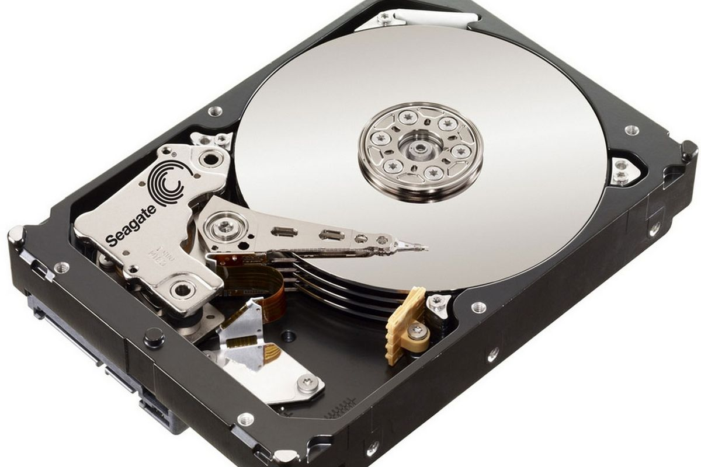
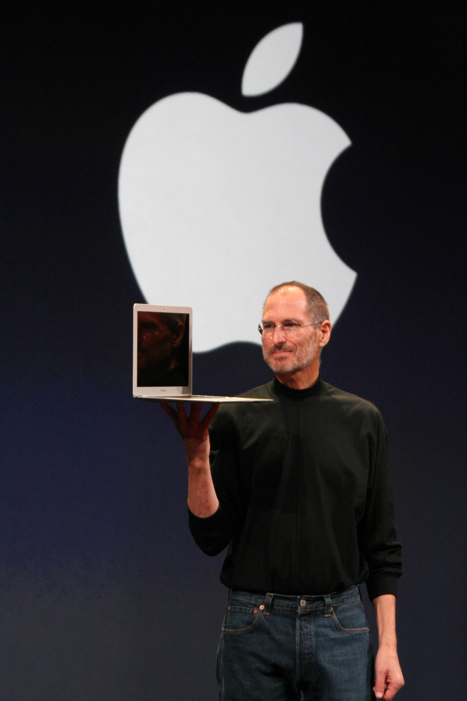

Hitachi Global Storage Technologies announces the first 1 TB hard disk drive (HDD). The Hitachi Deskstar 7K1000 used five 3.5-inch 200 GB platters and rotated at 7,200 RPM. By comparison, the world's first HDD, the IBM RAMAC 350, had a storage capacity that was approximately 3.75 MB. As such, the Deskstar had a greater storage capacity by a factor of 300,000 and was thousands of times smaller.
Apple introduces their first ultra notebook – a light, thin laptop with high-capacity battery. The Air incorporated many of the technologies that had been associated with Apple's MacBook line of laptops, including integrated camera, and Wi-Fi capabilities. To reduce its size, the traditional hard drive was replaced with a solid-state disk, the first mass-market computer to do so.
